На вопросы отвечает Татьяна Яковлева - глава Института Диабетологии, доктор медицинских наук и практикующий врач, спасший тысячи жизней. Лучший медицинский специалист в области диабета на всём пространстве постСССР.

Запомните: Диабет теперь можно вылечить! Каждый отныне способен побороть смертельный недуг и спасти свою жизнь.
Месяц назад стартовала федеральная программа "Россия без диабета", нацеленная на борьбу с сахарным диабетом. Каждый диабетик может получить уникальное российское лекарство от диабета за счёт федерального бюджета. Сегодня мы поговорим о программе с руководителем Института Диабетологии, Татьяной Сергеевной Яковлевой, которая согласилась побеседовать после прямого эфира на НТВ (на тему "Прорыв России в области лечения диабета").
Беседует Кристина Лапова
К.Лапова: "Здравствуйте, Татьяна Сергеевна. Скажите, верно ли утверждение, что сахарный диабет - это "обязательный" спутник зрелого возраста?"
Яковлева Т.С.: Здравствуйте, Кристина! Конечно же, это неправда. Обязательные спутники зрелого возраста - это излишнее доверие к врачам, которые лечат вас всю жизнь, но все никак не вылечат. А на самом деле сахарный диабет и масса других болезней изумительно поддаются лечению в любом возрасте. Это никакое не чудо, а обычная наука.
Причем, если знать секрет и приложить немного дисциплины, то избавиться от недугов можно в домашних условиях и очень быстро. Это делают тысячи моих пациентов, которые не посещают врачей и не сдают кучу ненужных дорогостоящих анализов.
Вот и секрет - восстановив функцию организма по усвоению инсулина, мы его вылечиваем!
К.Лапова: "Да, но ведь считается, что сделать это после 45 лет почти невозможно?"
Яковлева Т.С.: Глупости это все! Я себя вытащила из инвалидной коляски после осложнения с диабетом, а это пострашнее, чем 45-летие.
К.Лапова: "А вы вытаскивали других из инвалидной коляски?"
Яковлева Т.С.: И неоднократно. Но большая часть моих пациентов - обычные люди за 40, у которых диабет появился "с возрастом". Они приходят с очень похожими проблемами: осложнения разного рода, проблемы с ногами, зрением, кровью, внутренними органами. Диабет обеспечивает больному такую нагрузки на внутренние органы, что тот по сути разлагается изнутри. Результатом этого становятся многочисленные проблемы с центральной нервной системой, сердцем, печенью, почками. Всё чаще встречаются раковые опухоли, спровоцированные именно диабетом.
Они плачут, им больно, многие не могут быстро двигаться из-за сильнейших болей, некоторые вообще на грани смерти. А, казалось бы, обычные люди - не спортсмены и еще не инвалиды. И жалуются - "за что это мне, почему я?". А я отвечаю: давайте не причитать, а восстанавливать организм.
К.Лапова: "Как вы лично оцениваете опасность диабета?"
Яковлева Т.С.: Сахарный диабет сегодня – это серьезнейшая угроза, стоящая перед человечеством, которая объясняется стремительным ростом заболеваемости и высокой смертностью. Только за последние 20 лет оно вышло на первую строчку среди причин смертности населения. В связи с этим, болезнь находится в ряду приоритетных задач, стоящих перед врачами во всем мире.
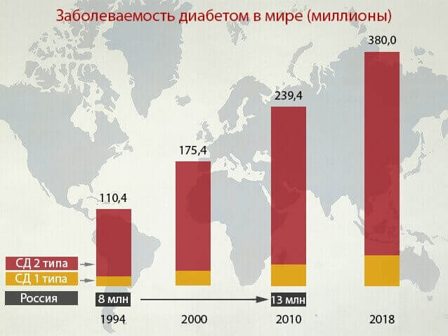
К.Лапова: "По каким симптомам человек может понять, что у него диабет?"
Яковлева Т.С.: Давайте сначала кратко о причинах болезни. Основной причиной сахарного диабета является аутоиммунный процесс, обусловленный сбоем иммунной системы. В организме начинают вырабатываться антитела, разрушающие клетки поджелудочной железы. Поэтому глюкоза начинает циркулировать в крови, что негативно влияет на все органы и ткани. В качестве источника энергии, организм начинает использовать жиры. В результате, в повышенном количестве образуются токсичные вещества (кетоновые тела), нарушается жировой, белковый и минеральный обмен. Это приводит к крайне печальным последствиям.
Если же говорить о симптомах диабета, то это:
- жажда;
- хроническая усталость;
- учащенное мочеиспускание;
- сухость во рту;
- слабость и повышенная утомляемость;
- кожные заболевания;
- головные боли;
- повышенный аппетит;
- зуд;
- сонливость;
- плохо заживающие раны;
- ожирение.
В качестве причин заболевания выступают:
- избыточная масса тела;
- нарушения чувствительности клеток к инсулину;
- учащенное мочеиспускание;
- физическая неактивность;
- генетическая предрасположенность;
- артериальная гипертония;
- курение и алкоголизм;
- возраст после 40 лет;
- стрессы.
К.Лапова: "К каким последствиям приводит диабет?"
Яковлева Т.С.: Коварство болезни в том, что сахарный диабет второго типа, в отличие от первого, развивается постепенно и отличается умеренной выраженностью симптомов. Больные годами могут не подозревать о наличии повышенного сахара в крови. Поэтому со временем у больного начинают обостряться осложнения. Сами осложнения достаточно обширны и могут быть крайне тяжелыми. Если говорить детальнее, то это:
- сердечно-сосудистые заболевания (атеросклероз, ишемическая болезнь сердца, инфаркт миокарда);
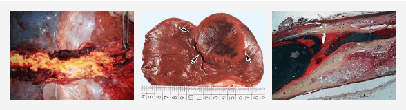
-
поражения нижних конечностей;
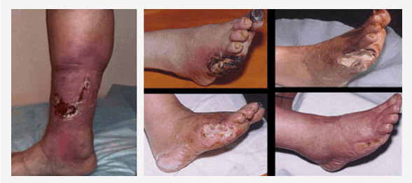
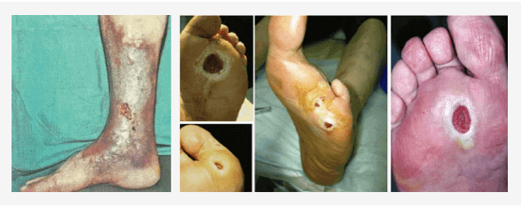
-
снижение зрения, слепота;
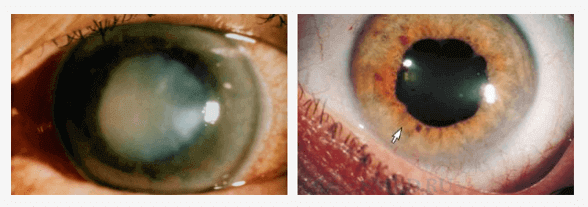
-
нейропатия (снижение чувствительности, сухость и шелушение кожных покровов, боли и судороги в конечностях);
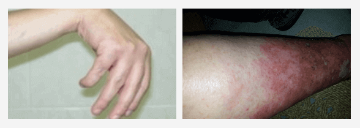
-
нарушение функций почек;
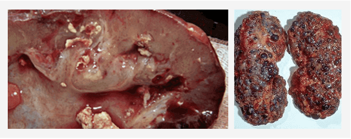
-
заболевание стоп (язвы, гнойно-некротические процессы) на фоне поражения периферических нервов, сосудов, кожи, мягких тканей;
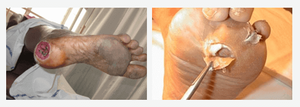
-
различные инфекционные осложнения (частые гнойничковые поражения кожи, грибки ногтей.и т.д.);
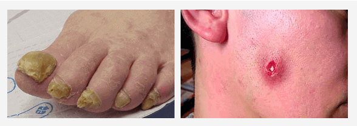
- комы.
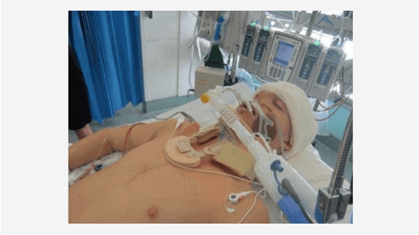
К.Лапова: "Как избежать страшных последствий и восстановить чувствительность тканей к инсулину после 40 лет?"
Яковлева Т.С.: До недавнего времени я лечила людей с помощью комплекса из специальной диеты, упражнений и препаратов. В основном это проводилось в стационаре. Естественно такой способ подходил не всем. Сейчас российская наука совершила серьёзный прорыв в области лечения диабета, обогнав своих коллег из-за рубежа.
Если говорить более конкретно, то ученые из НИИ Эндокринологии им. И.И. Мечникова завершили масштабные клинические испытания препарата нового поколения, лечащего диабет II типа. Новая методика позволяет особым “перепрограммированным” иммунным клеткам помогать поджелудочной железе воспринимать гормон инсулин. Это означает, что организм человека снова начинает воспринимать инсулин, который он сам же и вырабатывает. То есть диабетик полностью излечивается.
Наш центр первым в России получил сертифицированный доступ к этому новейшему препарату от сахарного диабета 2-го типа. Признаюсь вам, когда я о нем услышала впервые - я просто рассмеялась, поскольку не верила в его эффективность. Но я была поражена, когда мы завершили тестирование - 4 567 человек полностью излечились от сахарного диабета, это более 93,6% всех испытуемых, 5.8% почувствовали существенные улучшения, и лишь у 0.6% не было замечено улучшений.
К.Лапова: "Что это за препарат? Расскажите о нём?"
Яковлева Т.С.: Я говорю о специальном лекарстве "Diafast". Это препарат, который позволяет в кратчайшие сроки, буквально от 4-х дней, забыть о проблемах с сахаром в крови, и в течение пары месяцев вылечить даже очень сложные случаи диабета, остановив болезнь навсегда. Он способен эффективно помогать даже в тех случаях, когда начали развиваться осложнения.
На разработку лекарства было потрачено более 195 миллионов долларов. Сейчас оно распространяется только на территории России, причём в рамках специальной федеральной программы, совершенно бесплатно. Властью поставлена задача в первую очередь обеспечить препаратом население России.
К.Лапова: "И как же действует этот чудо-препарат?"
Яковлева Т.С.: Никакого чуда тут нет, только сухая наука. Лекарство генерирует специальные "перепрограммированные" иммунные клетки, которые после очередного промежутка времени восстанавливают работоспособность поджелудочной железы, давая ей возможность полностью усваивать инсулин, вырабатываемый самим организмом. Это первый в своём роде препарат, который на данный момент времени не имеет аналогов в мире.
К.Лапова: "Звучит впечатляюще. Только объясните нам, что это значит для простых людей с болезнями?"
Яковлева Т.С.: Это значит, что больной может справиться с болезнью в домашних условиях и за короткий промежуток времени. Diafast не сбивает уровень сахара в крови, это не временная мера, как укол инсулина, он "перезапускает" организм на клеточном уровне. Препарат устраняет причину самого диабета и возвращает организму возможность усваивать инсулин, который вырабатывается естественным путём. Больной не просто избавляется от симптомов, а удаляет корень болезни - невосприимчивость организма к самостоятельно выработанному инсулину.
В первый же день Diafast запускает системы регенерации организма. И убирает негативные симптомы диабета, это вы сразу ощутите. Уже через две-три недели лечение будет завершено.
К.Лапова: "Diafast помогает только на ранних стадиях?"
Яковлева Т.С.: Нет, я же вам говорю: он воздействует на клеточном уровне, восстанавливая организм диабетика. Он лечит диабет абсолютно любой тяжести - вплоть до самых запущенных случаев, когда речь идёт уже о тяжелых осложнениях. Diafast удивительно эффективен.
К.Лапова: "Это очень интересное средство. И что, оно и правда именно избавляет от диабета, а не просто устраняет симптомы?"
Яковлева Т.С.: Diafast и устраняет симптомы диабета, снижая сахар в крови (на начальных этапах лечения), и полностью ликвидирует заболевание. Для диабетиков, это сейчас единственное лекарство, которое действительно избавляет от болезни.
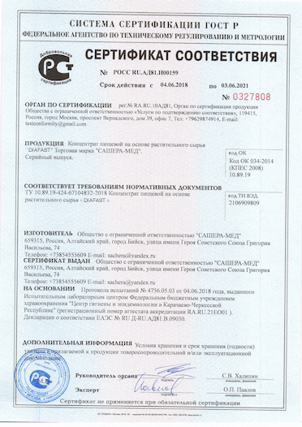
К.Лапова: "Вы сказали, что Diafast можно получить по льготе бесплатно. Это может сделать любой?"
Яковлева Т.С.: Да, абсолютно любой. Правда есть одно но. Мы хотели начать масштабные продажи в аптеках - но никак не можем договориться с фармацевтами, поскольку Diafast может навредить их бизнесу. Люди годами покупают их лекарства и инсулин, а больных становится только больше, и их такое положение дел устраивает. Совместно с Минздравом РФ было принято решение реализовывать Diafast через специально созданный сайт. Однако работать сразу на всю страну – невозможно, поэтому мы решили проводить федеральную программу «РОССИЯ БЕЗ ДИАБЕТА» по очереди во всех регионах страны. Все желающие сегодня могут получить Diafast совершенно бесплатно. Далее цена возрастет стандартной {{x_price_previous}} {{x_currency}} и мы будем проводить программу в других регионах РФ.
К.Лапова: "До какого срока будет проводиться программа? После этого срока получить Diafast по льготной программе бесплатно будет невозможно?"
Яковлева Т.С.: Совершенно верно. Срок окончания действия программы – . Именно до этого срока (включительно) необходимо оставить заявку на сайте. Поэтому те, кто хочет получить Diafast бесплатно и пройти с помощью него курс лечения, пожалуйста, поторопитесь. Поданные до этого времени заявки будут на 100% рассмотрены и одобрены. Могу вас в этом заверить.
Так же при поддержке Министерства Здравоохранения был проведен опрос, который превзошел наши ожидания.
ОПРОС: как вы избавились от диабета?
К.Лапова: "Спасибо за интервью, Татьяна Сергеевна! Может быть вы хотите что-то сказать нашим читателям перед тем, как мы попрощаемся?"
Яковлева Т.С.: Единственное, что ещё хотелось бы сказать, обращаясь ко всем диабетикам - не относитесь к своей болезни, как к досадному недоразумению. Это чрезвычайно опасный и смертельный недуг, который может в любой момент отправить вас на тот свет. Так что если у вас есть симптомы и вам поставили диагноз - лечитесь, пока не стало поздно.
Важно! Был сделан вывод, что лето и осень - лучшее время для начала лечения сахарного диабета. Благодаря стабилизации средней температуры, ускоряется обмен веществ, усиливается циркуляция крови в организме, увеличивается приток крови и кислорода во внутренние органы, эффект от использования Diafastа возрастает. Излечение от диабета, также как от сопутствующих болезней происходит на 67% быстрее, чем это происходило бы в другое время года. Восстановление функций организма происходит на 100% в течение всего курса лечения.
Опасайтесь подделок! Оригинальный препарат DIAFAST можно приобрести на ОФИЦИАЛЬНОМ САЙТЕ или заполнить форму ниже.
Введите свои данные, чтобы получить DIAFAST БЕСПЛАТНО!
Понравилась статья? Поделитесь с друзьями!

Игорь К. (г. Москва),
Я рад, что у нас отечественная медицина не стоит на месте. Про Diafast кстати уже слышал, друг у меня успешно его использовал. Правда говорит не слышал что бесплатно.
Марина Апхимова (г. Омск),
Был диабет. был и сплыл...за 25 дней ушло все! Спасибо за это!

Светлана Никова (г. Краснодар),
Поддерживаю! Очень эффективное средство от сахарного диабета! Сейчас чувствую себя отлично!

Андрей Миковский (г. Сочи),
Народ, помогите! Устал уже от диабета. Дискомфорт и боли не дают жизни. Уже просто не знаю, что делать. Принимаю разные средства периодически, но они не помогают:
Сергей Баранцев (г. {{location.name}}),
Андрей, бери DIAFAST, не пожалеешь. У самого проблемы были, из-за диабета делать не мог ничего, становился овощем понимногу, уже руки опустились. Спасибо матери что нашла DIAFAST и заставила им воспользоваться. Кстати, покупали пол года назад, без всякой федеральной программы (и цена была у него приличная, почти 2 тысячи за упаковку) Зато теперь от диабета совсем ничего не осталось. Поверь, возьми, и все наладится вот увидишь
Валерий (г. Ачинск),
Огромное спасибо вам за интервью и за то, что открываете людям глаза! Это же колоссальный прорыв!
Наталия Дмитриева (г. Москва),
Как получить Diafast?
Ян Князев (г. Москва),
Наталия, вот тебе ссылка Diafast, только поторопись пока идет федеральная программа. Мне лично он очень помог
Наталия Дмитриева (г. Москва),
Ян, да, спасибо тебе, уже заказала
а можешь сказать сколько примерно доставка будет идти
Ян Князев (г. Москва),
Наталия, так мы с тобой с одного города, так что примерно за 3 дня придет)
Наташа (г. Мурманск),
Не может быть! Не могу поверить что бесплатно! Сделала заказ, о результатах позже напишу, большое спасибо центру эндокринологии за то, что смогли организовать эту программу!
Ксения (г. Москва),
Спасибо, Татьяна Сергеевна. Если бы не вы, то я бы не поверила в эффективность препарата! Я больше 5 лет прожила с мужем у которого сахарный диабет. После того как он начал принимать Diafast, сахар стабилизировался полностью. Самое интересное, он даже не понял сначала почему - лекарство я ему в еду добавляла, сам он у меня скептик тот ещё! Спасибо Вам!
И посылка пришла очень быстро.
Татьяна Яковлева, (г. {{location.name}}),
Ксения, не стоит благодарности. Вы лучше скажите, пожалуйста, сколько у вас заняло лечение по срокам?
Ксения (г. {{location.name}}),
Татьяна Сергеевна, примерно 15 дней, после 20 дней я вообще перестала замечать что бы у него проблемы какие-то были.
Вероника (г. Ростов),
Спасибо огромное тем, кто производит лекарство. У меня оно буквально спасло очень родного человека! А для кошелька бесплатно это просто сказка!
Михаил (г. Новосибирск),
Большое спасибо за то, что рассказываете о таких вещах людям. Я сама о DIAFAST узнала еще 3 месяца назад, когда заказывал его сам. С тех пор стараюсь о нем рассказывать всем знакомым. Но я - простой человек, а ваш сайт читают десятки тысяч людей!

Диана (г. Москва),
Я по какому-то каналу видела передачу про этот Diafast. Там все восхищались тем, какое наши сделали лекарство.
Людмила Константиновна (г. Омск),
Заказывала себе Diafast, около 4 месяцев назад. Не верила, что поможет. Но результат просто не описать словами. Пока ещё сижу на диете, но иногда от неё отступаю и всё нормально. Сахар в крови меряю регулярно - все в пределах нормы. На седьмом небе просто от счастья!.
Комментарии